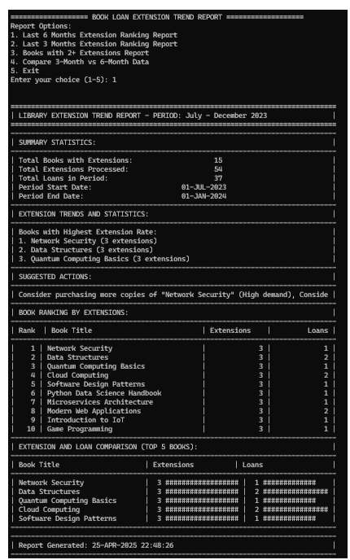

Library Analytics & Reporting System
Backend Database Project for Loan Tracking & Risk Analysis
Project Overview
A comprehensive database management project focused on the logic of library operations. The system queries raw loan data to generate complex, readable reports for administration. It includes logic for calculating overdue fines, assessing borrower risk levels, and identifying reading trends.
Generated Reports

Fines Status & Risk Assessment Report:
This module calculates total unpaid fines and categorizes members into High/Medium/Low risk levels based on their overdue history.
It features a visual bar chart (ASCII) to display risk distribution.

Loan Extension Trend Report:
Analyzes book demand by tracking how often loans are extended.
The report suggests purchasing actions for high-demand books (e.g., "Network Security") and visualizes the data to compare extensions vs. loans.